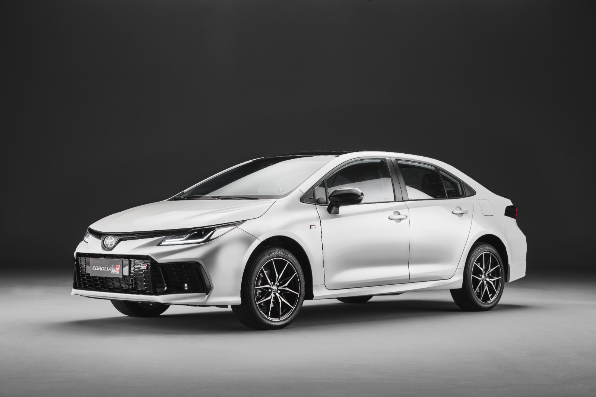

O carro mais vendido da história da humanidade — todas as informações

O Toyota Corolla é o carro mais vendido da história da humanidade, sem exceção. Desde seu lançamento em 1966, já foi comercializado em mais de 150 países e regiões, com cerca de 55,46 milhões de unidades vendidas até dezembro de 2024. Só no Japão, o acumulado chega a aproximadamente 10,89 milhões de unidades.
No mercado americano, o Corolla estreou em 1968 e, já no ano seguinte, ultrapassou a marca de 1 milhão de unidades vendidas globalmente. Hoje, a Toyota vende cerca de 1,5 milhão de Corollas por ano no mundo.
"Corolla" vem do latim e significa "coroa" — a parte mais bela da flor. Quando o nome foi escolhido em 1966, a Toyota consultou dicionários de vários idiomas e optou por esse nome elegante e internacional.
O desenvolvimento do Corolla sempre seguiu uma filosofia central: em uma escala de 100 pontos, atingir uma média de 80 pontos em todos os quesitos, acrescentando alguns, superando assim as expectativas do cliente. Essa filosofia foi estabelecida pelo líder de desenvolvimento da primeira geração, Tatsuo Hasegawa, e permeia os 59 anos de evolução do Corolla.
Missão do Corolla: ser "um carro para a felicidade e o bem-estar de todas as pessoas do planeta".
A produção do Corolla é altamente localizada, atualmente em 16 fábricas de 13 países/regiões. Principais polos:
| País/Região | Fábrica | Início da Produção |
|---|---|---|
| Japão | Fábrica de Takaoka | Novembro de 1966 |
| Tailândia | Fábrica Gateway | Agosto de 1972 |
| África do Sul | Fábrica de Durban | Maio de 1975 |
| Venezuela | Fábrica de Cumaná | Abril de 1986 |
| Canadá | Fábrica de Cambridge | Novembro de 1988 |
| Paquistão | Fábrica de Karachi | Março de 1993 |
| Turquia | Fábrica de Adapazarı | Setembro de 1994 |
| Vietnã | Fábrica de Hanói | Setembro de 1996 |
| Brasil | Fábrica de Indaiatuba | Agosto de 1998 |
| Taiwan (China) | Fábrica de Zhongli | Março de 2001 |
| Índia | Fábrica de Bangalore | Janeiro de 2003 |
| China Continental | Tianjin (Xiqing/TEDA) | Fevereiro de 2004 |
| EUA | Fábrica do Mississippi | Outubro de 2011 |
A fábrica brasileira, em Indaiatuba (SP), produz o Corolla desde agosto de 1998 e é um dos principais polos da América do Sul.
O Corolla já chegou à 12ª geração, e cada uma delas aplicou a filosofia "80 pontos".
| Geração | Período | Características Principais |
|---|---|---|
| 1ª | 1966–1970 | Sedã compacto de 5 lugares, 1.0L, 60 cv, posicionado entre o Publica e o Corona |
| 2ª | 1970–1974 | O Sprinter se torna linha independente; surge a versão Cupê |
| 3ª | 1974–1979 | Entre-eixos +35 mm, bitolas dianteira e traseira +40 mm cada |
| 4ª | 1979–1983 | Linhas mais retas; até 7 tipos de carroceria |
| 5ª | 1983–1987 | Grande mudança: versão familiar passa de tração traseira (FR) para dianteira (FF) |
| 6ª | 1987–1991 | Tema: "sedã superior além da categoria", foco em sofisticação |
| 7ª | 1991–1995 | Dimensões ampliadas; luxo atinge o auge |
| 8ª | 1995–2000 | Foco em ecologia, segurança e custo total de propriedade; redução de até 50 kg |
| 9ª | 2000–2006 | Entrada no século XXI, design mais moderno |
| 10ª | 2006–2013 | Mercado brasileiro recebe motor flex |
| 11ª | 2013–2019 | Dimensões maiores, multimídia modernizada |
| 12ª | 2019–atual | Plataforma TNGA; primeiro híbrido flex do mundo |
O Corolla é líder absoluto no segmento de sedãs médios no Brasil, com média superior a 2.200 emplacamentos/mês. Após o reajuste de junho de 2026, a faixa de preço vai de R$ 177.590 a R$ 210.090.
| Versão | Motor | Potência | Preço Atual (R$) |
|---|---|---|---|
| XEi 2.0 CVT | 2.0 Flex | 175/177 cv | 177.590 |
| GLi Hybrid | 1.8 Flex + elétrico | 122 cv (combinada) | 194.790 |
| Altis 2.0 CVT | 2.0 Flex | 175/177 cv | 206.790 |
| GR-S 2.0 CVT | 2.0 Flex | 175/177 cv | 206.790 |
| Altis Premium Hybrid | 1.8 Flex + elétrico | 122 cv (combinada) | 210.090 |
Reajuste de junho/2026: aumentos entre R$ 2.600 e R$ 3.100 por versão.
Exemplo: versão Altis Premium 2.0 CVT
A maior inovação da 12ª geração do Corolla no Brasil é o sistema híbrido flex (HEV Flex) — o primeiro do mundo capaz de usar etanol.
Funcionamento: Recupera energia nas frenagens para recarregar a bateria; em baixas velocidades urbanas, prioriza a condução elétrica, sem necessidade de recarga externa.
O Corolla no Brasil traz de série em toda a linha o Toyota Safety Sense (TSS), que inclui:
Atualmente a Toyota oferece 5 modelos da família Corolla no mundo:
| Modelo | Carroceria | Posicionamento |
|---|---|---|
| Corolla | Sedã | Espaço premium + tamanho ideal |
| Corolla Sport | Hatchback | Esportividade e agilidade |
| Corolla Touring | Perua | Grande capacidade + prazer de dirigir com baixo centro de gravidade |
| Corolla Cross | SUV | "Na mosca" — versatilidade total |
| GR Corolla | Hatchback | Performance Gazoo Racing, apelo selvagem |
O Corolla Cross foi lançado em 2021 como SUV compacto e também tem forte desempenho no Brasil, com preço inicial em torno de R$ 164.990.